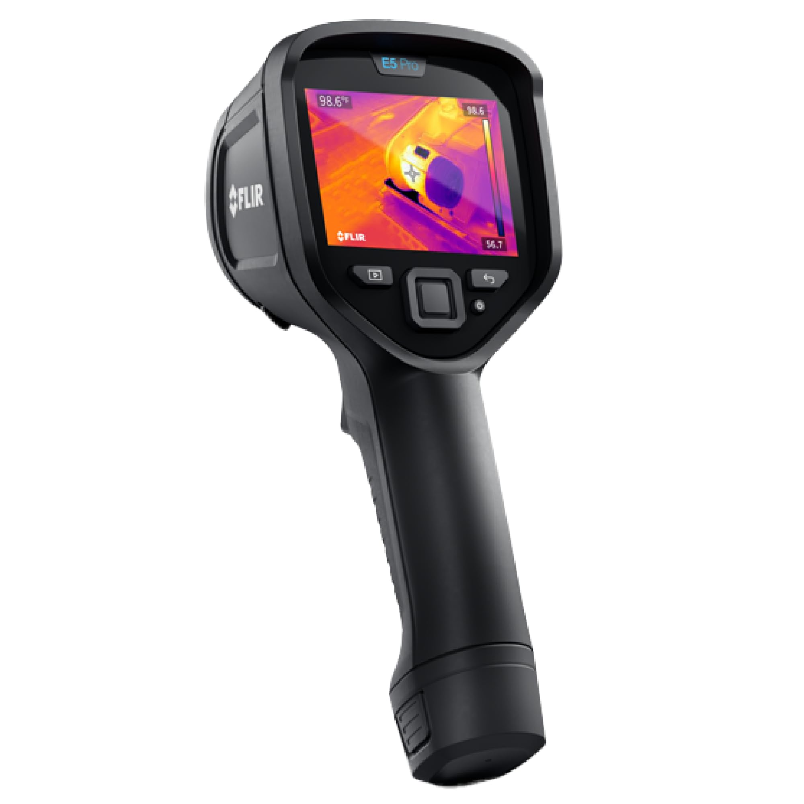
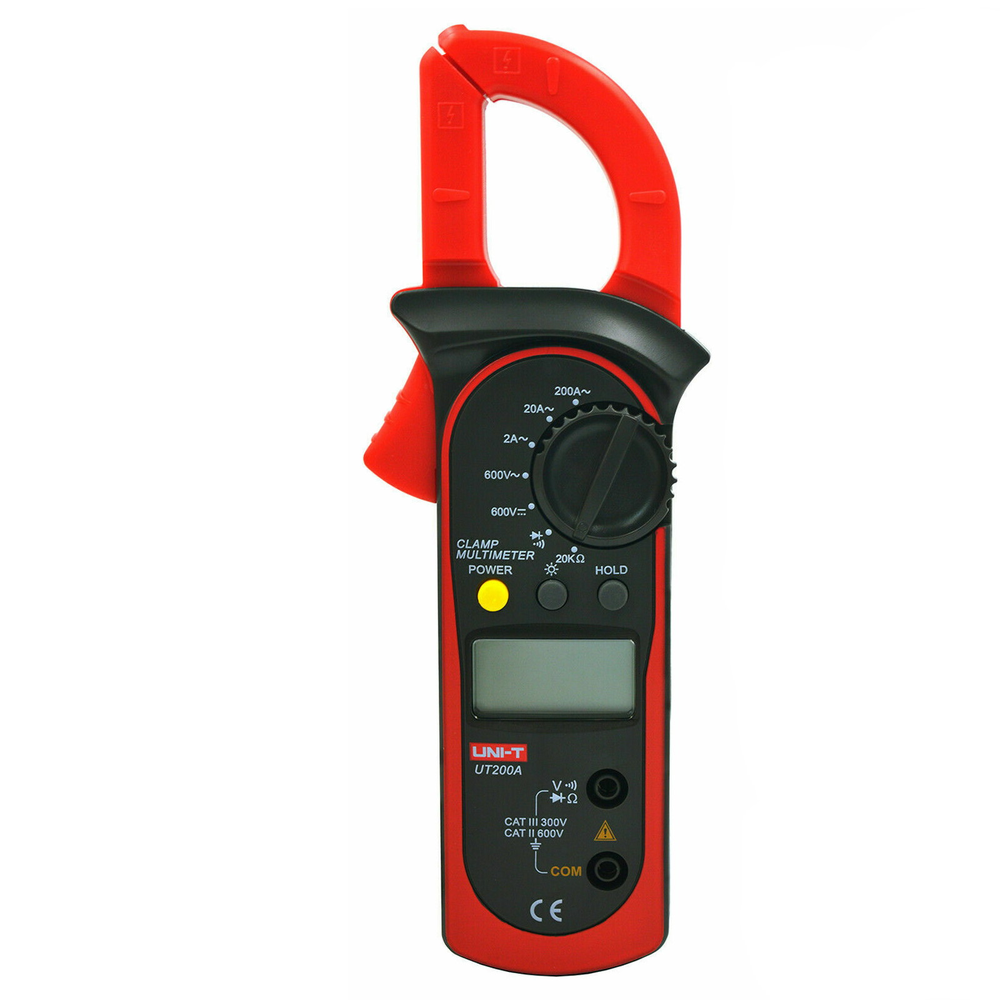
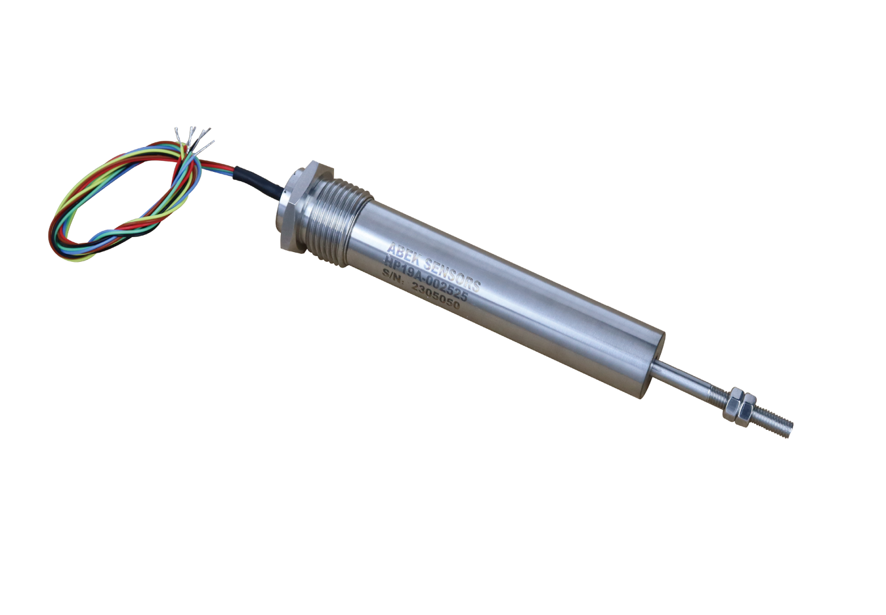
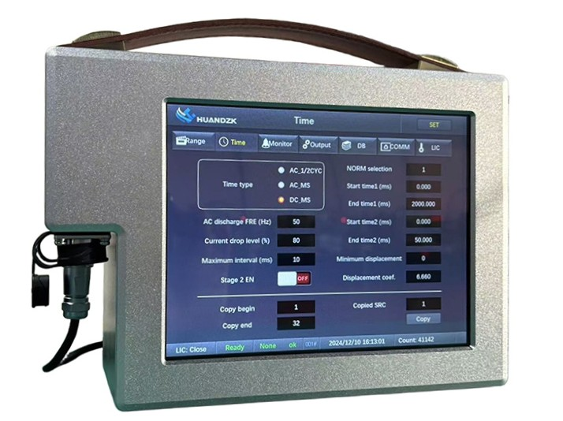

Quality Assurance Team
Clarren Leo Anak Chan
Electrical Engineer
Task: Clamp meter measurement, power/heat input calculation, scatter diagrams.
Ahmad Danny Islafh Abdullah
Data Dashboard Engineer
Task: Compile all data into interactive HTML dashboard, ensure visualization clarity.
Muhammad Hazim Bin Khairulnizam
Mechanical Engineer
Task: Load (arc analyzer) & displacement (LVDT) measurement, comparison table.
Muhammad Syed Fakhrul DIni Bin Muhammad Syed Fairos
Thermal Analyst
Task: Thermal camera operation, control chart (X-bar & R) for temperature stability.
Diagnostic Equipment & Sensors

Thermal Camera
Captures surface temperature and cooling rate of the weld bead and Heat-Affected Zone (HAZ).

Clamp Meter
Measures electrical current (A) and voltage (V) without disconnecting the welding circuit.

LVDT Sensor
Linear Variable Differential Transformer used to measure structural displacement and distortion.

Arc Welding Analyzer
Records high-speed load and force dynamics generated during the welding process.
Table 1: 30 Samples Electrical Measurement Parameters
| Sample | Current (A) | Voltage (V) | Power (W) | Heat Input (kJ/mm) | Resistance (Ω) | Voltage Drop (V) |
|---|
Electrical Scatter Diagrams & Correlation
Plot A: Current vs Voltage
Plot B: Current vs Power
Plot C: Current vs Heat Input
Table 2: Surface Temperature Measurements (25 Samples)
| Sample | R1 (°C) | R2 (°C) | R3 (°C) | R4 (°C) | R5 (°C) | R6 (°C) | Mean (X̄) | Range (R) |
|---|
Statistical Process Control (SPC) - Thermal Stability
1. X-Bar Chart (Temperature Means)
- The vast majority of the sample means (23 points) deviate beyond the acceptable statistical thermal boundaries.
- The overall heat input across the production run is highly erratic and unpredictable due to erratic wire feed speed causing arc current fluctuations.
2. R-Chart (Range Variation) Control Limits
Mean (R̄): 8.82 °C | UCL_R: 17.68 °C | LCL_R: 0.26 °C
- 0 points are above the Upper Control Limit (UCL R).
- Although the X-bar chart reveals severe inter-sample instability, the R-chart shows intra-sample stability (the sensor reads consistently within each sample grouping).
Table 3: Load & Displacement Reference Data
| Measurement Point | Arc Welding Analyzer (Load, N) | LVDT (Displacement, mm) |
|---|---|---|
| Arc start | 125 | 0.02 |
| 5 seconds | 142 | 0.15 |
| 10 seconds | 138 | 0.38 |
| 15 seconds | 145 | 0.62 |
| 20 seconds | 140 | 0.85 |
| Arc stop | 135 | 1.02 |
| After cooling (60 sec) | N/A | 0.48 |
Load & Displacement Trajectory Graph
Max Load: 145 N
Occurring precisely at 15 seconds. Direct result of intense localized thermal expansion, generating high internal stress within the metal.
Max Disp: 1.02 mm
Occurred at Arc Stop. As heat accumulated during welding, the material expanded continuously, causing maximum displacement before cooling started.
Residual Disp: 0.48 mm
Final displacement recorded at 60s. This indicates permanent plastic deformation/warpage which critically affects structural dimensional tolerances.
Equipment Comparison Table
| Feature | Arc Welding Analyzer (Load) | LVDT (Displacement) |
|---|---|---|
| Measured Parameter | Load / Force | Linear displacement |
| Operating Principle | Electrical signal analysis from load sensor | Electromagnetic induction |
| Typical Range | Tens to hundreds of Newtons | Micrometer to millimeter |
| Accuracy / Precision | High | Very high |
| Application in GMAW | Monitor welding force/load | Monitor movement and distortion |
| Data Output Format | Force (N) | Displacement (mm) |
Summary & Recommendations
- Electrical Findings: The welding power and heat input exhibit a strong positive correlation with current and voltage, confirming that heat energy absorption relies directly on electrical stability.
- Thermal Irregularities: The SPC charts conclusively demonstrate that the thermal process is Out of Control. Inter-sample temperatures heavily violate the Upper and Lower Control Limits.
- Mechanical Stress: Thermal instability induced extreme peak loads (145 N) and left a permanent residual structural distortion of 0.48 mm, threatening the structural integrity of the 500 critical components.
- Corrective Action Plan: The erratic fluctuations are traced back to inconsistent wire feeding. The production line must be halted to inspect and calibrate the wire feeder drive rolls and replace the worn contact tip.